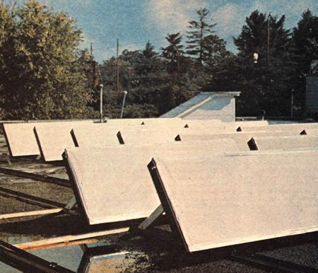

The impending possibility of a 40% natural gas shortage in North Carolina this winter has been more than a little unsettling to many businesses including THE MOTHER EARTH NEW - down here in the Tarheel State. Which is why, as announced in MOTHER NO. 35, we began laying plans last summer for the solar heating of 1,600 square feet of this magazine's editorial space.
John Hansell, Howard Bruning, Jeff Sheppard, and Scot Iseman-four architectural students from Georgia Tech launched the whole project (on paper, at least) back around mid-July of last summer. And, by the time the Fearless Four were due back on campus in September, they had designed and begun prefabbing the 30 collectors they calculated we'd need to warm those 1,600 square feet of office space.
Luckily for us, engineer Joe Lane joined MOTHER's staff the day John, Howard, Jeff, and Scot were leaving for Georgia and a transfer of at least the main design philosophy was safely made to the first of a "new team" of builders of MOTHER's solar system. Carpenter Bob Pace and shop whiz Dennis Burkholder soon added their talents to Joe's and the work went on. And, before long, a Florida firm experienced in the construction of solar heating and cooling systems Aries Engineering, of Jacksonville-was also brought in for consultations with the MOTHER crew.
At this writing (mid-November), the 30 collectors are firmly installed on the roof of MOTHER's editorial building and four 560-gallon recycled tanks (for the storage of water that has been heated in the collectors) have been set up down in the basement. Plumbing is being laid in and insulated and-if all continues to go well we may well be enjoying some solar heated offices by the time you read this.
With emphasis on the "may" Because, right now, it looks as if one of the few parts we need from the outside manufacturing world a heat exchange coil won't be in our hands for at least another eight weeks. Such is I life.
|
 |
|
|